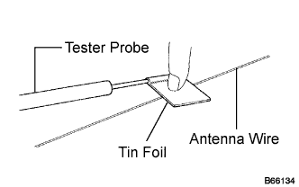
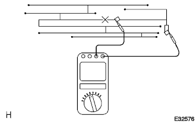
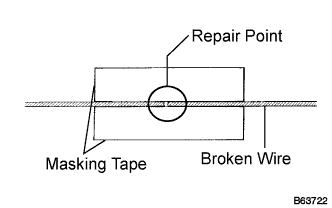
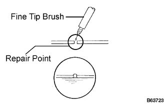

WINDOW GLASS ANTENNA WIRE > REPAIR |
| 1. INSPECT WINDOW GLASS ANTENNA WIRE |
 |
 |
Check the voltage at the center of each wire, as shown in the illustration.
| 2. REPAIR WINDOW GLASS ANTENNA WIRE |
 |
Clean the broken wire tips with grease, wax and silicone remover.
Place masking tape along both sides of the wire to be repaired.
Thoroughly mix the repair agent (DuPont paste No. 4817).
 |
Using a fine tip brush, apply a small amount of the repair agent to the wire.
After a few minutes, remove the masking tape.